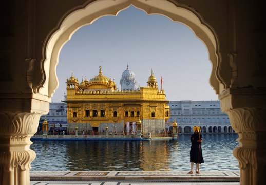
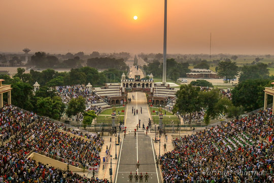
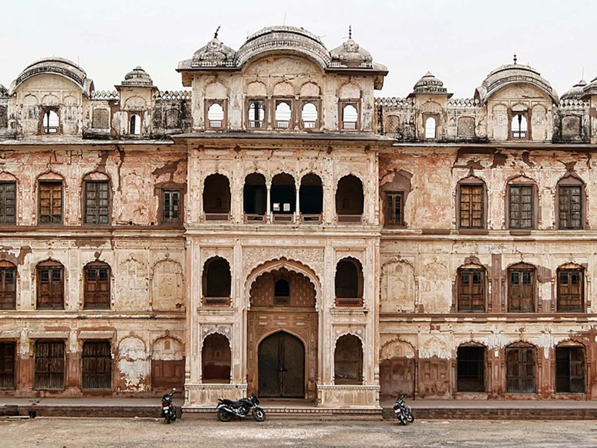
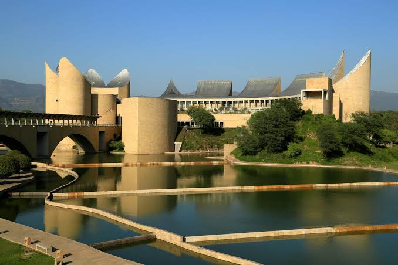
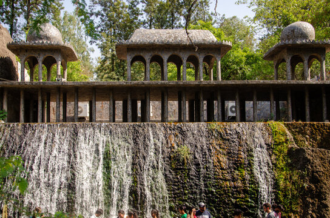

Golden Temple, Amritsar
This is the holiest and most beautiful spiritual site for the Sikh community. Its spectacular golden walls sit right in the middle of a peaceful, holy water pool. People from all religions are welcome here to pray and find deep inner peace. Volunteers run a giant free kitchen that feeds up to 100,000 visitors every single day.

Wagah Border, Amritsar
This is the official border crossing point between India and Pakistan. Every evening before sunset, soldiers from both countries put on a high-energy military parade. The crowd sings, dances, and cheers with loud patriotic music in a stadium-like setting. It is a thrilling place to experience intense national pride and high-stepping drills.

Jallianwala Bagh, Amritsar
This is a peaceful memorial garden located very close to the Golden Temple. It honors hundreds of innocent people who were tragically killed by British troops in 1919. You can still see real bullet marks preserved on the brick walls today. A flame burns constantly to make sure the world never forgets their sacrifice.

Qila Mubarak, Patiala
This is a massive, historic fort complex that stands in the heart of Patiala city. It was built long ago by royal Sikh rulers and features beautiful palace designs. Inside, you can explore the Palace of Mirrors and see shiny, colourful glasswork. It also stores rare old weapons, royal carriages, and ancient paintings from Punjab's past.

Virasat-e-Khalsa
This is a world-famous museum that celebrates 500 years of Sikh history. The fortress-like buildings look incredibly modern and sit beautifully between green hills. Inside, you will find giant interactive screens and stunning art installations. It uses music, lights, and poetry to tell the story of Punjab's brave culture.

Rock Garden and Sukhna Lake
This spot combines a unique artistic wonderland with a peaceful nature park. The Rock Garden is made entirely out of broken plates, glass, and industrial waste. Right next to it is a beautiful, man-made lake where people go to relax. Visitors love to take boat rides here and watch the beautiful sunset over the water.